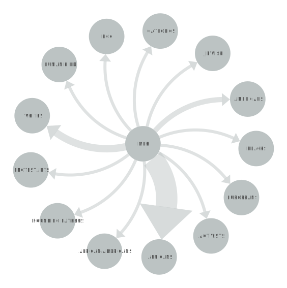
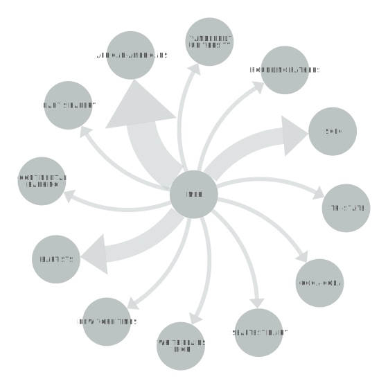

MARTIN LUTHER KING
POSITIVE OR NEGATIVE RHETORICAL ACTION
Brief Explanation of SVG.
Brief explanation of findings.
"I HAVE A DREAM"
In "I Have a Dream," Dr. Martin Luther King Jr. begins the speech by referencing the Emancipation Proclamation and the promise of freedom for Black people. He then goes on to describe the ongoing struggle for civil rights, highlighting the injustice and discrimination faced by Black Americans. He calls for an end to segregation and for the creation of a society where all people are judged by the content of their character, rather than the color of their skin. The speech reaches its climax with the famous "I Have a Dream" section, where he paints a vision of a world where people of all races can live together in peace and harmony. He declares that he dreams of a day when his children will be judged not by their skin color, but by their character. The speech ends with Dr. Martin Luther King Jr. urging his audience to continue the fight for justice and equality, and to never give up until their goals are achieved.
NETWORK GRAPH
EXPLANATION
INSERT INFO ABOUT GRAPH
"I'VE BEEN TO THE MOUNTAINTOP"
In "I've Been to the Mountaintop," Dr. Martin Luther King Jr. discusses his own mortality and the possibility that he may not live to see the promised land of racial equality. He then goes on to emphasize the importance of the civil rights movement and the need to continue the struggle for justice and equality. He also encourages his audience to use nonviolent resistance to achieve their goals, and to not be afraid of opposition or violence. One of the most powerful moments in the speech is when Dr. Martin Luther King Jr. talks about the Montgomery bus boycott and the power of collective action. He reminds the audience that when Black people refused to ride the buses, they were able to bring about change, and encourages them to continue to use their economic power to push for change. Unfortunately, Martin Luther King Jr. would be murdered the very next day.
NETWORK GRAPH
EXPLANATION
INSERT INFO ABOUT GRAPH